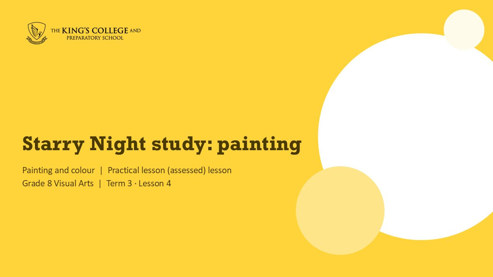

Term 3 · Lesson 4 · Practical lesson
Starry Night study 2: brushstrokes
Start here
Today I will
- Today I will paint directional, expressive brushstrokes
- Today I will mix the blues and yellows of the night sky
- Today I will work from dark to light and try impasto
Think first
Look at this close-up. Can you see which way Van Gogh moved his brush? Trace it in the air with your finger.
Words to know
- Expressive brushstroke
- A visible stroke that shows energy or feeling, not a smooth, hidden one.
- Impasto
- Paint put on so thickly that it stands up from the surface and shows the strokes.
- Directional mark
- A stroke that follows a direction and leads the eye, such as around a swirl.
- Layering
- Painting one layer over another, usually dark first, then lighter.
Slides

Notes
Van Gogh's directional, expressive brushstrokes; impasto (thick paint); mixing the blues and yellows; working from dark to light.
Painting like Van Gogh
- Follow the shape: Strokes go around the stars, swirl in the sky and flicker up the cypress.
- Short strokes side by side: Do not blend them away; let each stroke show.
- Dark to light: Deep blues first, then middle blues, then pale blues and yellows on top.
- Impasto last: Thick paint on the brightest parts (stars, moon) so they stand up.
Mixing the night
| Blues | Yellows |
|---|---|
| Deep blue: blue + a touch of black | Bright yellow straight from the tube |
| Middle blue: blue + a little white | Pale yellow: yellow + white |
| Pale blue: white + a little blue | Warm yellow: yellow + a touch of red |
Remember
Let every brushstroke show which way it is going.
Practical
You need: A5 study, acrylics, round and flat brushes, palette knife, palette, water pot, paper towel
Build up the sky and swirls
- Mix three blues and two yellows on your palette.
- Paint the darkest blue strokes first, following the directions in the print.
- Add middle blues and then pale blues in short strokes beside each other.
- Paint the swirls around the stars and moon.
- Add thick, bright yellow on the stars and moon (impasto).
- Stand back and check: do the strokes move your eye around the picture?
Test yourself
- What is impasto?
- Why do we paint from dark to light?
- Which way did your strokes go around the stars?
Show answers
1. Very thick paint that stands up and shows the strokes. 2. Light colours on top stay clean and bright, and it is easier to cover darks with lights in acrylic. 3. Around them in circles or swirls.
Finished early?
Stroke direction map
Plan where your brushstrokes will go before you paint them.
- Draw a thumbnail of your A5 detail in your visual journal.
- Draw small arrows showing which way each stroke should go: around stars, swirling in the sky, up the cypress.
- Mark with a star where you will use impasto.
- Compare your map with your painting and fix one area that goes the wrong way.